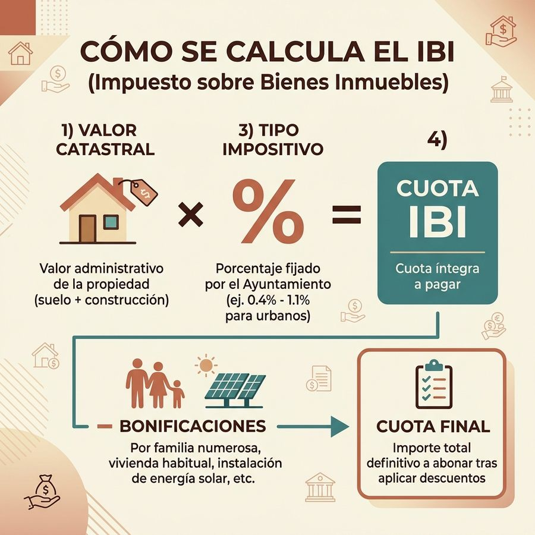

¿Qué es el IBI y quién lo paga?
El Impuesto sobre Bienes Inmuebles (IBI) es el impuesto local más importante en España y la principal fuente de financiación de los ayuntamientos. Grava la titularidad de derechos reales sobre bienes inmuebles —viviendas, locales, garajes, fincas rústicas— situados en el término municipal.
Está regulado por el Real Decreto Legislativo 2/2004 (Texto Refundido de la Ley de Haciendas Locales). Cada ayuntamiento aprueba anualmente su ordenanza fiscal y fija el tipo impositivo dentro de unos límites legales.

Cómo calcular el IBI
La fórmula es sencilla: Cuota IBI = Valor Catastral × Tipo Impositivo. A la cuota íntegra resultante se restan las bonificaciones que el propietario tenga reconocidas, obteniendo la cuota líquida a pagar.
| Elemento | Qué es | Dónde consultarlo |
|---|---|---|
| Valor Catastral | Valor asignado al inmueble por el Catastro | sedecatastro.gob.es o recibo anterior |
| Tipo Impositivo | % fijado por el Ayuntamiento (0,4–1,1% urbano) | Ordenanza fiscal municipal |
| Cuota íntegra | Valor Catastral × Tipo Impositivo | Resultado del cálculo |
| Cuota líquida | Cuota íntegra menos bonificaciones | Recibo del IBI |
Ejemplo práctico: Un piso con valor catastral de 90.000 € en un municipio con tipo del 0,65%:
90.000 € × 0,65% = 585 € / año
Si además tienes una bonificación del 25% por familia numerosa: 585 € − 146,25 € = 438,75 € / año.
Cómo consultar tu valor catastral en la Sede del Catastro
El valor catastral es el único dato que necesitas buscar: el tipo impositivo lo fija tu ayuntamiento y lo tienes en la ficha de tu municipio. Puedes obtenerlo de tres formas:
- En tu último recibo del IBI: aparece como «base imponible» o «valor catastral», junto con la referencia catastral de 20 caracteres.
- Con identificación digital (Cl@ve PIN, certificado electrónico o DNIe) en sedecatastro.gob.es → «Consulta de datos catastrales» → «Consulta de un inmueble». Introduce la referencia catastral o busca por provincia, municipio y dirección. Verás el valor catastral total y su desglose entre valor del suelo y valor de la construcción, además del uso y el año de construcción.
- Sin identificación digital: la consulta libre del Catastro te da la superficie, el uso y el año, pero no el valor catastral, que es un dato protegido y solo se muestra al titular. En ese caso, pídelo en tu ayuntamiento o en la Gerencia Territorial del Catastro.
Revisa que los datos sean correctos. Errores frecuentes que hacen pagar más de lo debido: superficie superior a la real, uso mal asignado (por ejemplo, local comercial en un inmueble que ya es vivienda), obras derribadas que siguen dadas de alta o titularidad no actualizada tras una compra o herencia. La corrección se solicita ante el Catastro (declaraciones 900D o 902N según el caso) y, si el recibo ya está emitido, mediante recurso de reposición ante el ayuntamiento en el plazo de un mes desde la notificación.
Ojo con la ponencia de valores. El valor catastral se actualiza por coeficientes en la Ley de Presupuestos y, cada cierto tiempo, por una ponencia de valores colectiva que puede subirlo de golpe. Cuando eso ocurre, la base imponible se incrementa de forma gradual mediante la base liquidable (reducción decreciente durante nueve años), por lo que la cuota no se dispara en un solo ejercicio.
Cuándo se paga el IBI en 2026
El IBI se devenga el 1 de enero, pero cada ayuntamiento fija su propio período voluntario de pago. La mayoría lo sitúan entre septiembre y noviembre de 2026. Si no pagas en el período voluntario, la deuda entra en vía ejecutiva con los siguientes recargos:
Si no pagas dentro del período voluntario, la deuda entra en vía ejecutiva y el recargo depende del momento en que reacciones, no de los meses transcurridos: lo regula el artículo 28 de la Ley General Tributaria. Ver los tres tramos de recargo →
Qué recargo se aplica si pagas el IBI fuera de plazo
Pasado el período voluntario que fija tu ayuntamiento, la deuda entra en vía ejecutiva y el recargo depende de lo rápido que reacciones. Lo regula el artículo 28 de la Ley General Tributaria:
| Momento en que pagas | Recargo | Intereses de demora |
|---|---|---|
| Antes de que te notifiquen la providencia de apremio | 5% | No |
| Después de la notificación, dentro del plazo que concede | 10% | No |
| Fuera de ese plazo | 20% | Sí, se suman |
Sobre un recibo de 300 €, la diferencia entre reaccionar en la primera semana o dejarlo correr es de 15 € frente a 60 € más intereses. Si no puedes pagarlo de golpe, pide el fraccionamiento antes de que acabe el período voluntario: una vez en apremio, el recargo ya está devengado.
Cómo fraccionar el IBI en 2026
La mayoría de ayuntamientos permiten fraccionar el IBI en dos plazos sin intereses si la solicitud se presenta antes del inicio del período voluntario. El procedimiento habitual:
- Solicitud presencial en la Oficina de Recaudación Municipal
- Solicitud por sede electrónica (con certificado digital o Cl@ve)
- Algunos ayuntamientos activan el fraccionamiento automático al domiciliar el recibo
Consulta la guía de tu municipio para conocer el procedimiento y plazos exactos.
Bonificaciones en el IBI 2026
La Ley de Haciendas Locales establece bonificaciones obligatorias y potestativas. Ver la guía completa de bonificaciones IBI 2026.
| Bonificación | Descuento | Tipo |
|---|---|---|
| VPO (vivienda protección oficial) | 50% (3 años) | Obligatoria |
| Familia numerosa | Hasta 90% | Potestativa |
| Energías renovables | Hasta 50% | Potestativa |
| Conjunto histórico-artístico | Hasta 90% | Potestativa |
| Domiciliación bancaria | 1–5% | Potestativa |
Tipos de IBI por municipio: los extremos
Estos son los tipos de gravamen urbanos que el Ministerio de Hacienda publica para el ejercicio 2025, el último disponible. La cuota aplica cada tipo a un mismo valor catastral de 50.000 € para que la comparación sea homogénea.
| Municipio | Tipo urbano | Cuota con VC de 50.000 € |
|---|---|---|
| Los 10 tipos más altos | ||
| Vigo | 0,984% | 492 € |
| Almansa | 0,95% | 475 € |
| Monzón | 0,88% | 440 € |
| Mieres | 0,854% | 427 € |
| Sabiñánigo | 0,84% | 420 € |
| Grado | 0,84% | 420 € |
| Cangas de Onís | 0,83% | 415 € |
| Molina de Segura | 0,8075% | 404 € |
| Alfaro | 0,8% | 400 € |
| Arnedo | 0,8% | 400 € |
| Los 10 tipos más bajos | ||
| Toledo | 0,444% | 222 € |
| Carballo | 0,44% | 220 € |
| Cabanillas del Campo | 0,43% | 215 € |
| Utebo | 0,4% | 200 € |
| Zaragoza | 0,4% | 200 € |
| Santander | 0,4% | 200 € |
| Arteixo | 0,4% | 200 € |
| Ribeira | 0,4% | 200 € |
| O Porriño | 0,4% | 200 € |
| Redondela | 0,4% | 200 € |
La mediana de los 134 municipios de la guía es del 0,61%. Tabla ordenable con los 134 municipios, su año de valoración catastral, ICIO, IVTM y plusvalía →
Recuerda que un tipo alto no implica un recibo alto: la cuota depende del valor catastral de tu inmueble. Por qué la fecha de la última valoración pesa más que el tipo →